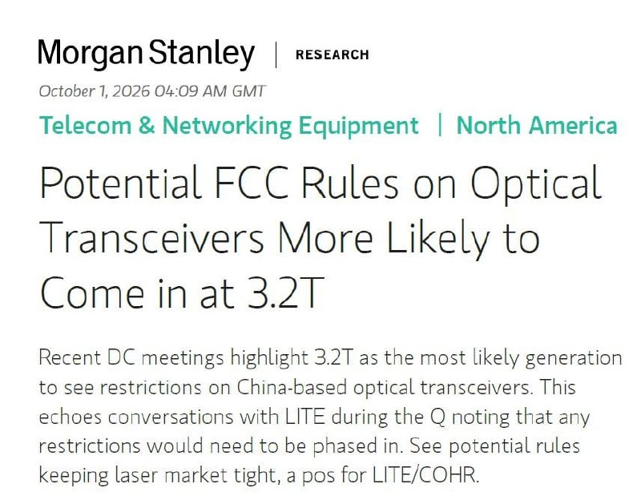
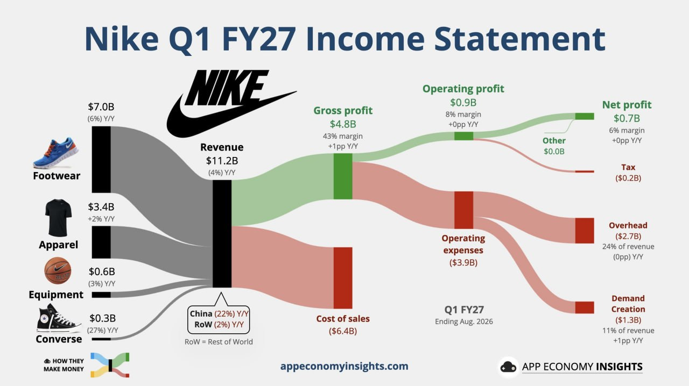
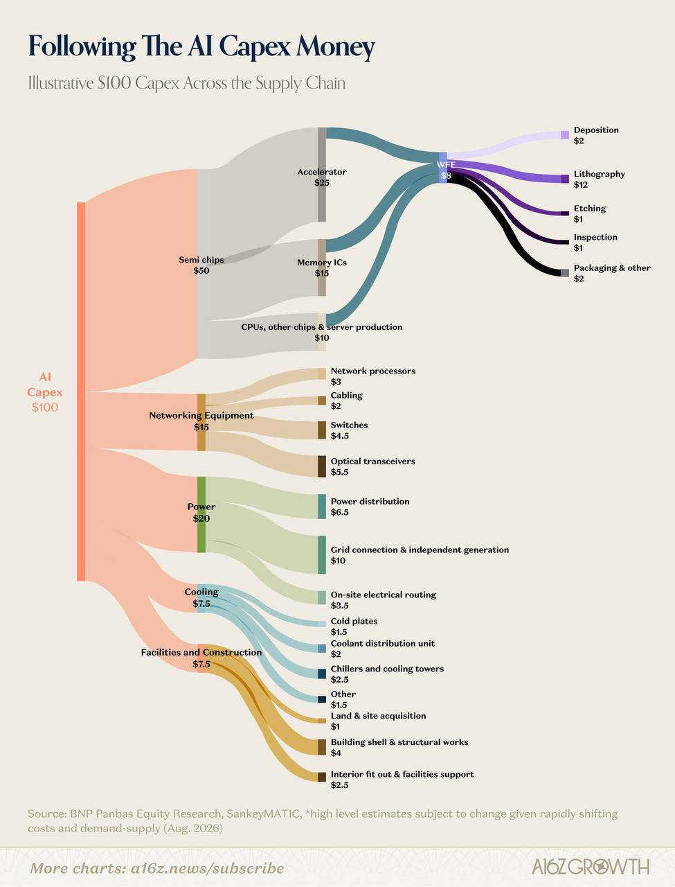

這次涵蓋 10/2 的 4 則貼文：摩根士丹利對美國可能限制中國光模組的 memo（#6457、#6458），Nike FY27 Q1 損益圖（#6459），以及 a16z 的「AI 資本支出 100 美元流向哪裡」圖（#6460）。（本封為補寄：原排程 10/3 那次沒有執行。）
原文（#6457）
MS 今日的光通 memo
- 3.2T 會是對中政策施力點，目的在決定下一代的生產位置，不認為是要拆解 800G/1.6T
- innolight 這類公司只要去採購 marvell DSP + LITE/COHR 的雷射湊足 65% bom content 還是可以輸美
- 目前美國替代產能不夠，aaoi 年化約 1200 萬顆，對比 Innolight 4430 萬＋Eoptolink 5670 萬顆
- 如果被擠壓到，中國可能控制 inp 基板出口反制
這篇看起來是傳聞為主，就先參考就好。為求湊到 65% 門檻，看起來受傷對象會是中國雷射廠
原文（#6458）：無文字，僅圖片。

圖為 Morgan Stanley Research 2026/10/1 報告首頁，標題「Potential FCC Rules on Optical Transceivers More Likely to Come in at 3.2T」：華府會議顯示 3.2T 最可能成為限制中國製光模組的世代，與 Lumentum（LITE）在法說時「限制需分階段實施」的說法一致；可能的規定會讓雷射市場維持吃緊，對 LITE/COHR 有利。
講解
光模組（optical transceiver）是資料中心裡把電訊號轉成光訊號在光纖上傳輸的元件，800G、1.6T、3.2T 是單顆模組的傳輸速率世代。AI 叢集的 GPU 之間要大量高速互連，所以光模組需求暴增，而全球最大供應商是中國的中際旭創（Innolight）與新易盛（Eoptolink）。公開報導顯示，美國 FCC 今年 8 月起被報導正在研擬限制中國製光模組進口，中方表示必要時會反制。MS 這份 memo 的重點是：限制比較可能從「下一代 3.2T」開始，而不是去拆掉現在已大量部署的 800G/1.6T 供應鏈，因為美國本土產能根本補不上（貼文引的數字：AAOI 年化約 1,200 萬顆，對比旭創 4,430 萬加新易盛 5,670 萬顆）。
「65% BOM content」指的是零組件成本中美國（或非中國）來源要佔多少比例才能算合規。光模組最貴的零件是 DSP 晶片（Marvell 等）與雷射（Lumentum、Coherent 等），所以中國模組廠只要改買美系 DSP 與雷射就可能湊到門檻繼續出貨，真正被擠掉的會是中國本土雷射供應商，這也是貼文結論。反制面，磷化銦（InP）基板是製作雷射晶片的關鍵材料，中國在這類材料有供應優勢，過去也曾對鎵、鍺實施出口管制，因此有此推測。
注意：股癌自己也說「看起來是傳聞為主」，FCC 規則目前仍是研擬階段，世代、門檻比例（65%）與時程都未定案；「65%」與產能數字來自 MS memo 的轉述，我未能看到原文核對。
原文：無文字，僅圖片。

圖為 App Economy Insights 的 Nike FY27 Q1（截至 2026 年 8 月）損益流向圖：營收 112 億美元（年減 4%），其中鞋類 70 億（-6%）、服飾 34 億（+2%）、配件 6 億（-3%）、Converse 3 億（-27%）；大中華區年減 22%、其他地區年減 2%。毛利 48 億（毛利率 43%，+1pp），營業利益 9 億（8%），淨利 7 億（6%）。
講解
這張是把損益表畫成桑基圖（Sankey），左邊是營收來源，往右依序扣掉銷貨成本、營業費用、稅，剩下淨利。重點是 Nike 仍在衰退：營收年減 4%，最拖累的是大中華區（-22%）與 Converse（-27%），而毛利率小升 1 個百分點，代表清庫存、降價促銷的壓力有減輕。「Demand Creation」是行銷費用，佔營收 11% 且比重上升，顯示公司正在花錢重建品牌熱度。數字來自第三方圖表，我只查到財報前瞻報導（S&P Global 稱「銷售仍承壓」），未逐項核對官方財報。股癌沒有附文字評論。
原文：無文字，僅圖片。

圖為 a16z Growth 的「Following The AI Capex Money」，以 BNP Paribas 研究估計：每 100 美元 AI 資本支出中，半導體晶片 50（加速器 25、記憶體 15、CPU 與其他晶片及伺服器組裝 10）、網通設備 15（光模組 5.5、交換器 4.5、網路處理器 3、線材 2）、電力 20（併網與自建發電 10、配電 6.5、場內配線 3.5）、散熱 7.5、廠房與營建 7.5；晶片之下的晶圓廠設備（WFE）約 8，其中微影 12？（圖上標示微影 $12 大於 WFE $8，應為圖本身的比例標示問題，請以圖為準）。
講解
這張圖回答「AI 投資的錢最後流到誰口袋」。一半給晶片，其中 GPU 等加速器最大，但記憶體已佔 15%，呼應前一封美光財報講的記憶體吃緊；網通 15% 裡光模組最大，正好連結上面 #6457 的光通議題。常被低估的是電力（20%）：資料中心要拉高壓電網、甚至自建發電，這塊比散熱與建築加起來還大。來源自己註明是「高層級估算，會隨成本與供需快速變動」，屬示意比例，不是精確統計；另外圖上微影（$12）大於其上層 WFE（$8），數字邏輯不一致，引用時要小心。